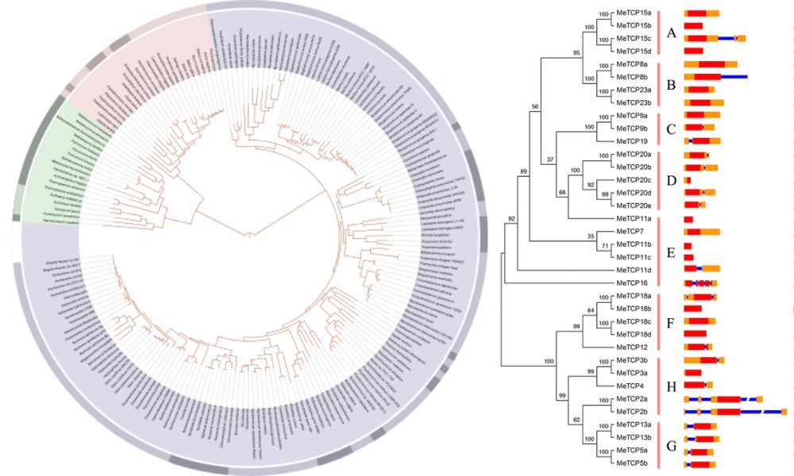
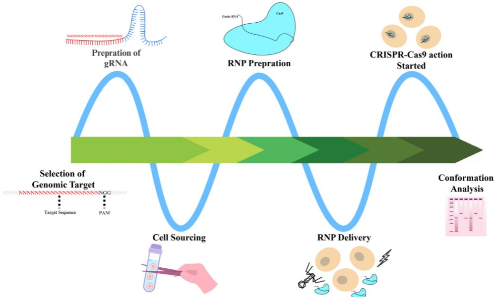
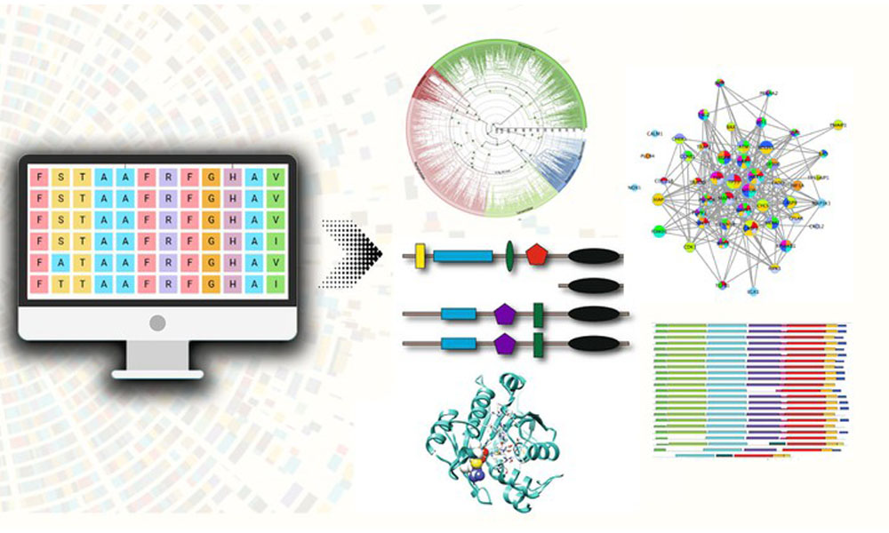
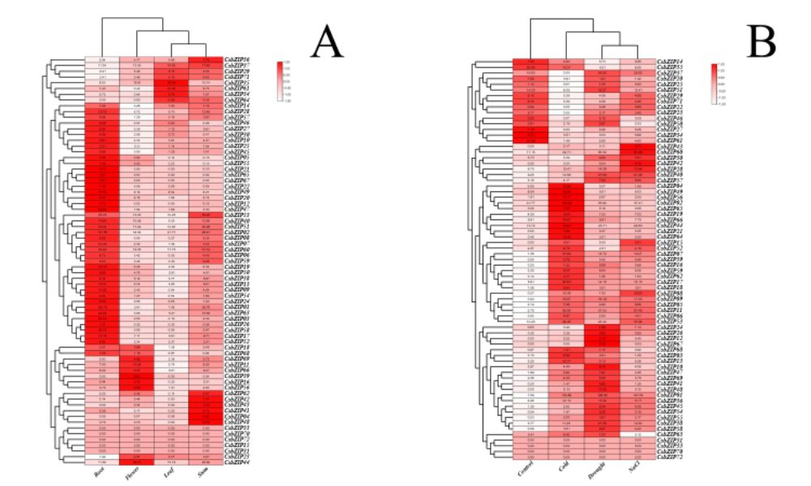
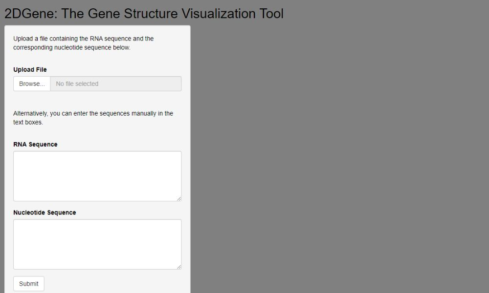
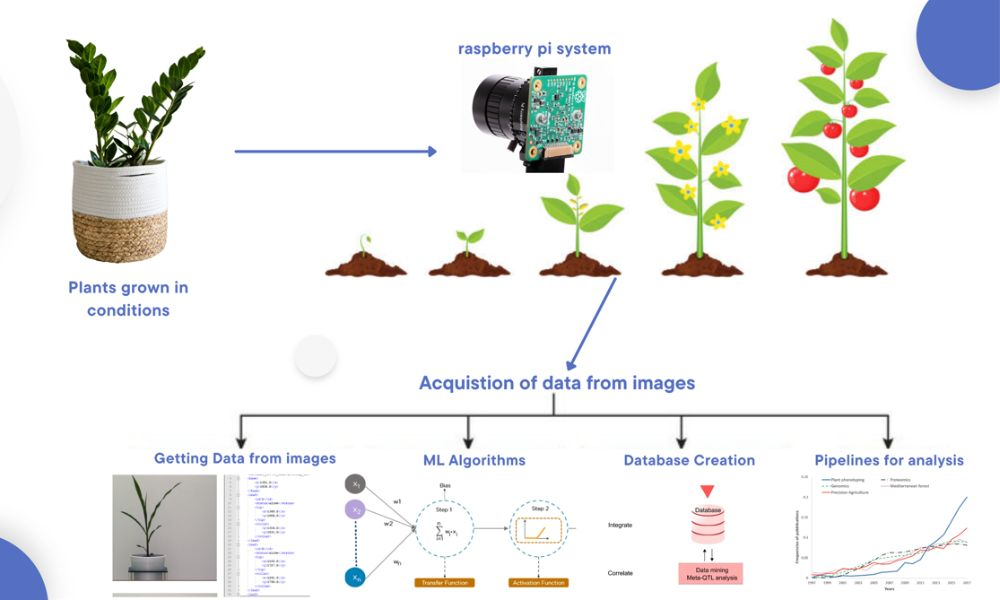
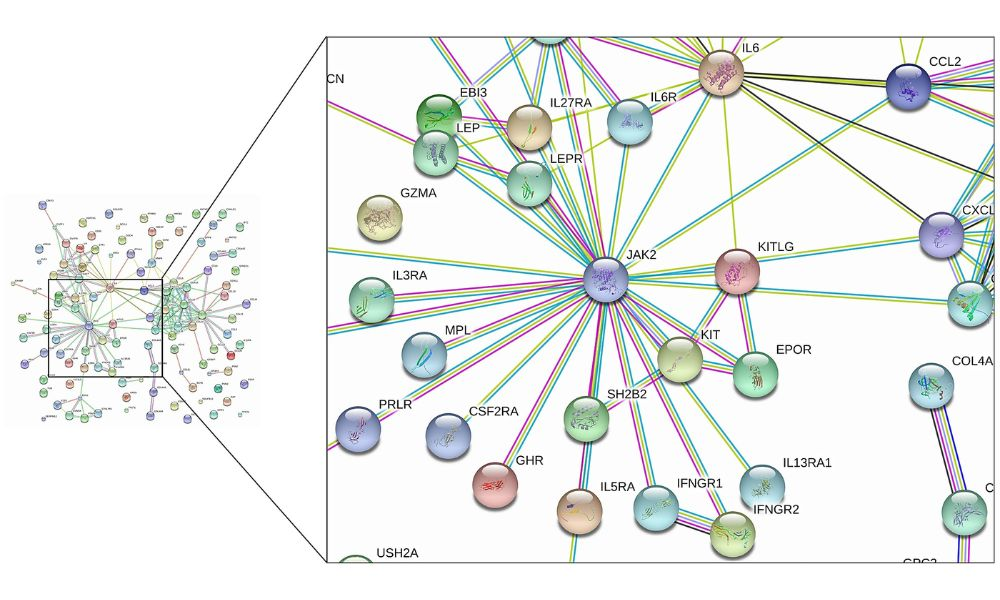

Udemy
NGS and Microarray Data Analysis In Bioinformatics
A Practical, End-to-End Guide to Gene Expression Analysis Using NGS and Microarray Data
Enroll NowHey there!
I'm a professional bioinformatician with expertise in genomics, proteomics, and computational biology. I help researchers and organizations analyze complex biological data, develop custom bioinformatics pipelines, and extract meaningful insights from genomic studies.
With a BS in Bioinformatics from GCUF and extensive research experience, I provide professional bioinformatics services to academic institutions, biotech companies, and research organizations worldwide. My expertise spans NGS analysis, single-cell genomics, variant calling, and multi-omics integration. I've contributed to 9+ peer-reviewed publications and successfully delivered numerous bioinformatics projects, combining strong computational skills with deep biological knowledge to solve complex research challenges.
Publications
Projects
Certificates
Developed Apps
Comprehensive analysis of RNA-seq, ChIP-seq, and whole-genome sequencing data using state-of-the-art tools and pipelines.
Custom bioinformatics pipeline development and automation for high-throughput data processing and analysis workflows.
Advanced single-cell RNA-seq analysis including clustering, trajectory inference, and cell type identification.
Integrative analysis combining genomics, transcriptomics, and proteomics data for comprehensive biological insights.
Expert consultation on bioinformatics strategies and hands-on training for research teams and organizations.
Comprehensive variant calling, annotation, and interpretation for both germline and somatic mutations.
Freelancer - Providing bioinformatics analysis services including NGS data processing, single-cell analysis, and custom pipeline development.
Research Assistant at Functional Genomics and Plant Tissue Culture Lab, GCUF. Conducted multi-omics analysis, developed bioinformatics tools, and contributed to 9 publications.
OilSeed Research Institute, AYUB Research Institute, FSD. Worked on determination of fatty acid profile in oilseed crops.
Government College University Faisalabad (GCUF). CGPA: 3.72/4.00. Department of Bioinformatics and Biotechnology.
BISE Faisalabad. Pre-Medical studies with focus on Biology, Chemistry, and Physics.
20+ certifications in bioinformatics, data science, and computational biology from Coursera, DataCamp, and other platforms.
A Practical, End-to-End Guide to Gene Expression Analysis Using NGS and Microarray Data
Enroll NowLearn how to Predict Protein 3D Structure using Computational Tools for Drug Discovery and more.
Enroll NowLearn the best of proteomics data analysis from protein sequence retrieval to 3D structure prediction and much more!
Enroll NowUnlock your True Potential as a Bioinformatician with Advanced Database Techniques
Enroll NowLearn the best of sequence alignment through hands on practice exercises and best instructions.
Enroll NowCrop and Pasture Science, 2025
View PaperIn: Functional Genomics: Methods and Protocols, Volume 3. Taylor & Francis, 2025
View ChapterIntegrative Plant Biotechnology, 2025
View PaperAnnual Methodological Archive Research Review, 2025
View PaperJournal of Computational Biophysics and Chemistry, 2026
View PaperBMC Genomic Data, 2024
View PaperIn: Plant Functional Genomics: Methods and Protocols, Volume 2. Springer US, 2024
View ChapterFunctional Plant Biology, 2024
View PaperPlant Stress, 2023
View Paper






Research ethics is a set of principles, rules, and regulations that guide the conduct of research...
Read MoreIn the rapidly evolving field of bioinformatics, the deluge of biological data poses a significant challenge...
Read MoreRNA (ribonucleic acid) is a molecule that plays a critical role in many cellular processes...
Read MoreReady to collaborate on your next bioinformatics project? Let's discuss how I can help you achieve your research goals.